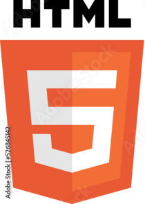

Content
Content is the most important component of whole website. Without it even if we add
HTML, Cascading Style Sheets(CSS) and JavaScript
there would be nothing on the pagge and building page would be pointless.
HTML

The HyperText Markup Language or HTML is the standard markup
language for documents designed to be
displayed in a web browser. It is often assisted by technologies such as Cascading Style
Sheets
(CSS) and scripting languages such as JavaScript.
CSS

Cascading Style Sheets (CSS) is a style sheet language used for describing the
presentation of a
document written in a markup language such as HTML or XML
(including XML dialects such as SVG,
MathML or XHTML).[1] CSS is a cornerstone technology of the World Wide
Web, alongside HTML and
JavaScript.[2]
JavaScript

JavaScript (/ˈdʒɑːvəskrɪpt/), often abbreviated as JS, is a programming language that is one of the
core technologies of the World Wide Web, alongside HTML and CSS. As of 2023, 98.7% of websites use
JavaScript on the client side for webpage behaviour,[10] often incorporating third-party libraries.
All major web browsers have a dedicated JavaScript engine to execute the code on users' devices.